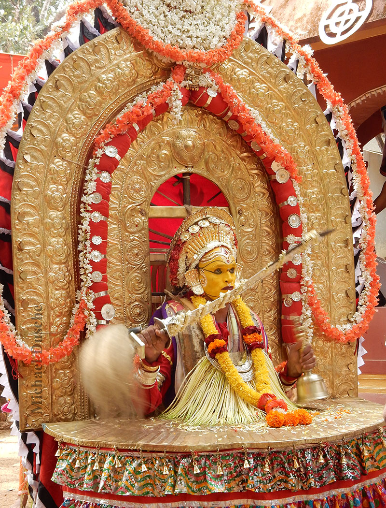
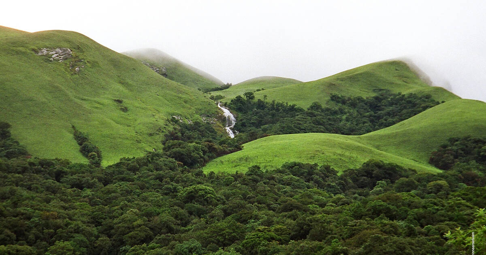
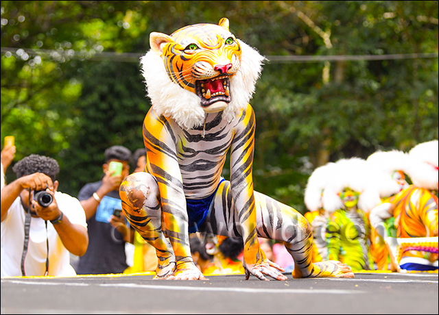
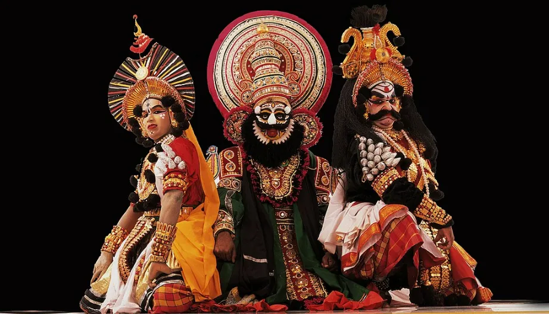
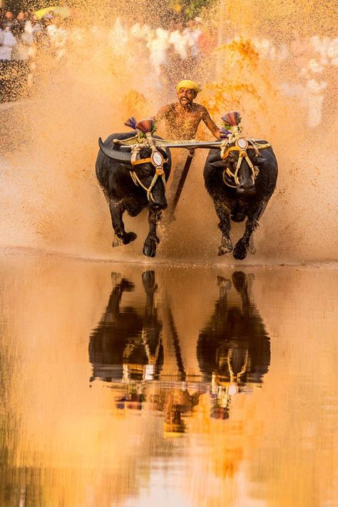
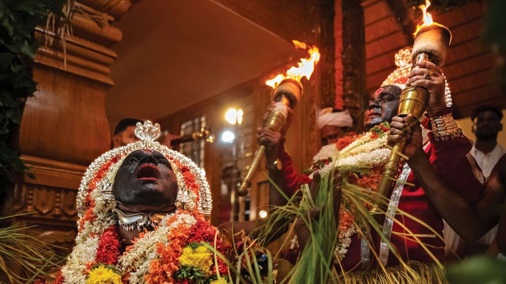
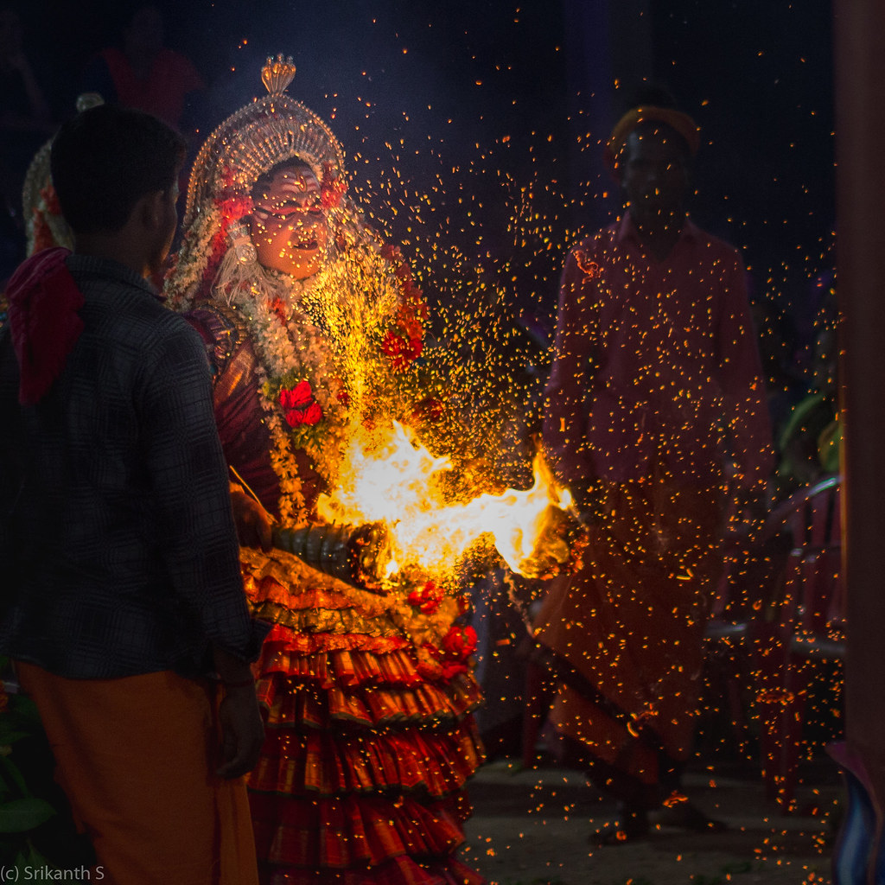
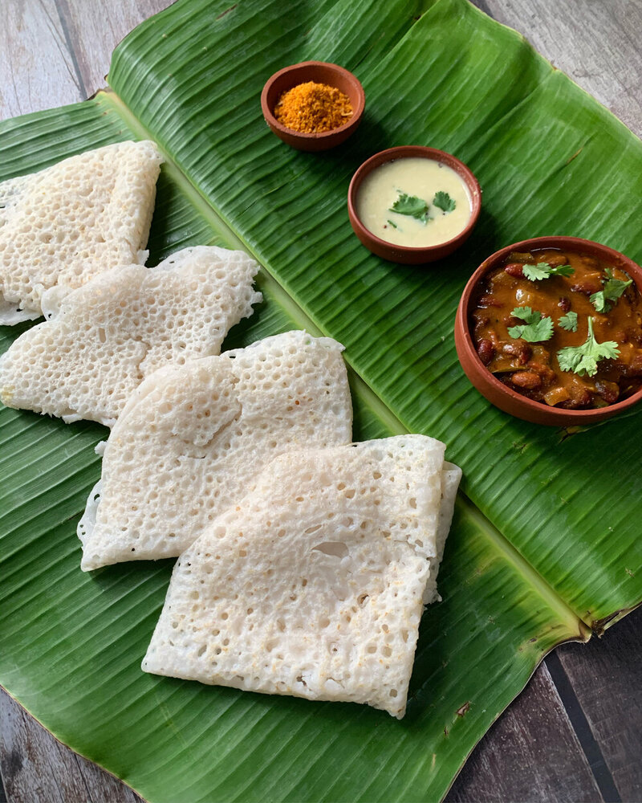
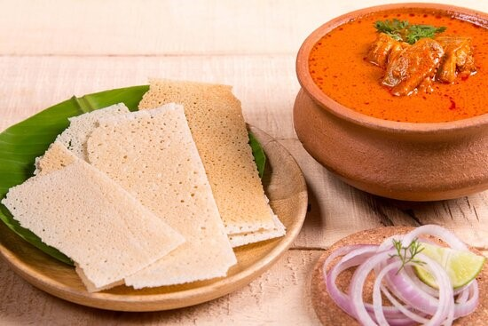
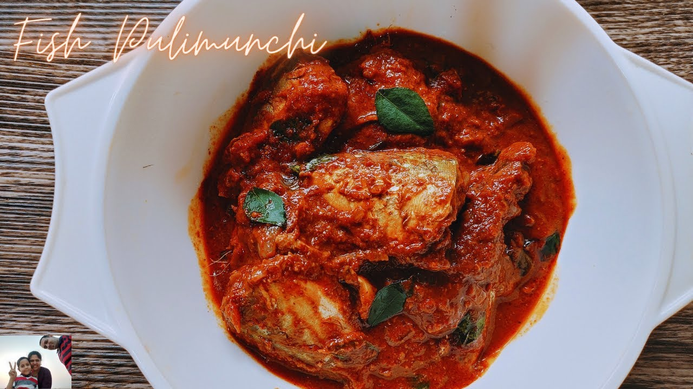

Bhuta Kola
A sacred spirit worship ritual where divine beings (Daivas) are invoked to protect communities, uphold justice, and maintain balance.
An ancient living culture of coastal South India

Tulunadu is a culturally distinct coastal region along the Arabian Sea, covering parts of present-day Karnataka and Kerala.
This land is defined by rivers, paddy fields, sacred groves, temples, and a strong spiritual connection between humans, nature, and the divine.

A sacred spirit worship ritual where divine beings (Daivas) are invoked to protect communities, uphold justice, and maintain balance.

A vibrant folk dance where performers paint themselves as tigers, symbolizing strength, protection, and festive joy.

A classical night-long dance drama combining storytelling, music, dialogue, and elaborate costumes rooted in epics.

A traditional buffalo race conducted in slushy paddy fields, celebrating agrarian life and rural strength.

Tulunadu follows a unique belief system centered on spirit worship rather than idol worship alone.
Sacred groves (Kaanas), shrines, and ancestral worship form the core of spiritual life, emphasizing harmony with nature.
One of the most remarkable features of Tulu society is the Aliyasantana system — a matrilineal inheritance tradition.



Soft rice crepes reflecting simplicity and balance.

Spiced chicken curry served with crisp rice wafers.

A fiery mackerel dish using tamarind and red chillies.
Tulu culture is not preserved in museums alone — it lives through rituals, oral traditions, performances, food, and community memory.